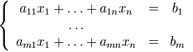
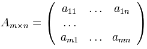
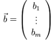
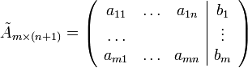
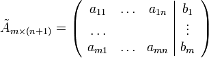

Методы линейной алгебры
Итак, у вас есть система линейных алгебраических уравнений, которую вам необходимо решить. Ее общий вид:

Коэффициенты ai,j составляют матрицу , а bi составляют вектор правых частей уравнений 
Корни уравнений ( x1 , ... ,xn ) нам необходимо найти.
Все действия в линенйной алгебре осуществляются над матрицами  и расширенной матрицей: 
и расширенной матрицей: 